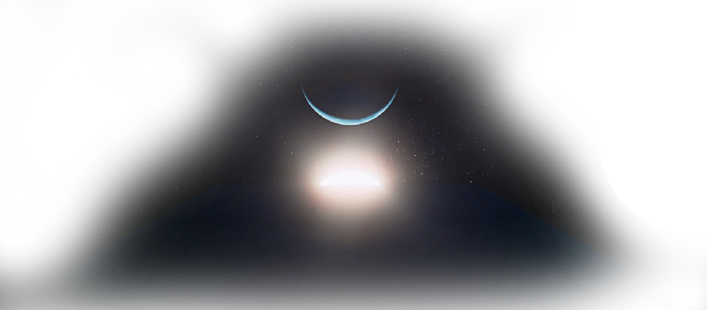
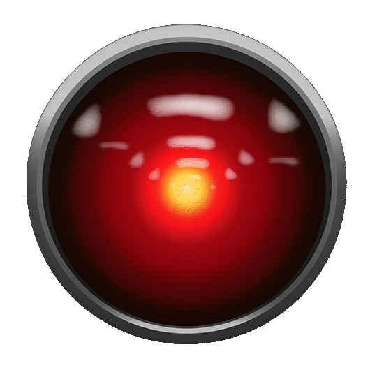

Sounds of A.I.

Syntetyk

Sztuczny Dotyk
Sounds of A.I.
Syntetyk
Sztuczny Dotyk
Cześć! Nazywam się Michał. Tworzę muzykę, która zabierze słuchaczy w kosmiczną podróż — miksuję elektronikę z gitarowym brzmieniem, tworząc unikalne brzmienia i dźwiękowe pejzaże pełne emocji. Współpracuję z artystami z różnych gatunków, od popu, po poezję śpiewaną i rock, pomagając im znaleźć swoje unikalne brzmienie. Prowadzę także warsztaty, na których uczę produkcji muzycznej, aranżacji i miksu. W wolnym czasie eksploruję nowe technologie oraz zajmuję się tworzeniem brzmień na wirtualnych (i nie tylko) syntezatorach.
W 2025 roku planuję wydanie autorskiego albumu o współczesnym świecie coraz bardziej zdominowanym przez A.I. Pojawią się także koncerty w formie pokazów audiowizualnych, łączących muzykę na żywo z efektami 3D i świetlnymi. Dodatkowo planuję otworzyć kanał edukacyjny online, aby dzielić się wiedzą z pasjonatami muzyki.

